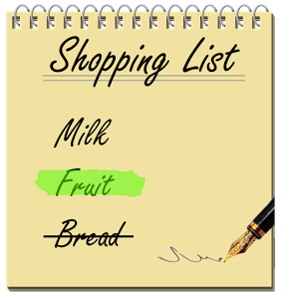
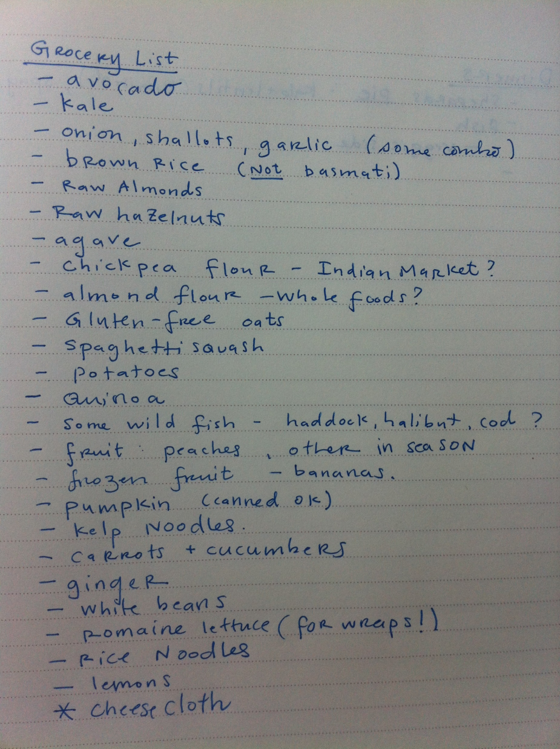
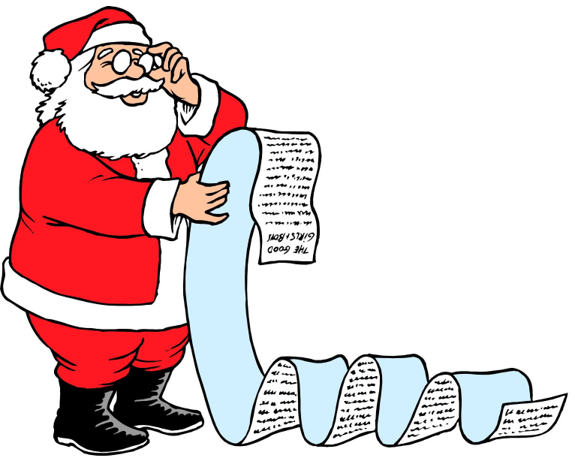
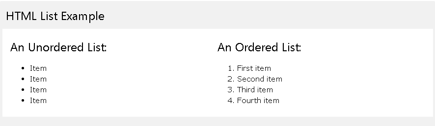
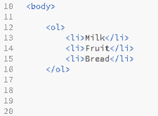
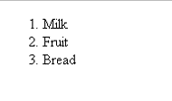
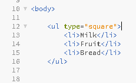
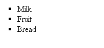
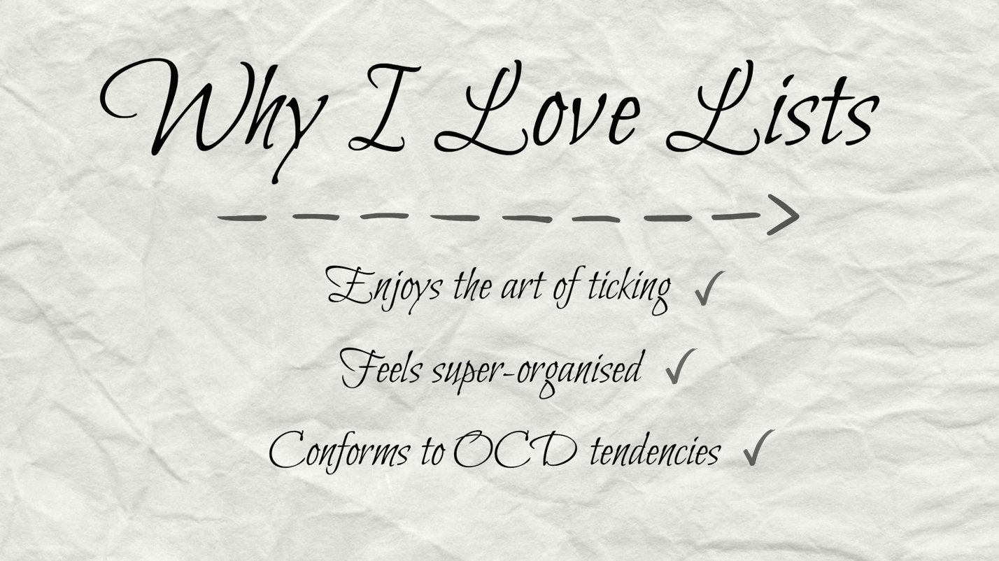

Lets Look at some Modern Lists
  
There is a lot of lists that we have in real life, lets see how we use them in programming.
Differences in Appearence
Ordered Lists vs Unordered Lists
Ordered Lists
- Provides lists of items in an ordered way, either with numbers or with Letter heading
- The list is usually done in the order or represents a reason why it is in order.
- Uses the <ol> tag
- Can be used with numbers, letters, or Roman Numerals
- If something on the list was out of order, it would affect the list.
What Does it Look like?
 
Changing Types?
- To change the type of list write <ol type=“A”> as an example. This will make it start with the letter A and go down the list
- You can also change the list to roman numeral by placing the type=“I” (Capitol i)
Ordered Lists vs Unordered Lists
Unordered Lists
- A list with mainly bullet points.
- You can also change it to open bullet points or various other markers.
- Use them when the list is just a collection of things without any order to them.
- If any part of the list is changed or shifted it doesn’t affect the overall list.
 

Thank you for reading this work and just go out and try using lists and list items! Go out and seize the day! CARPE DIEM